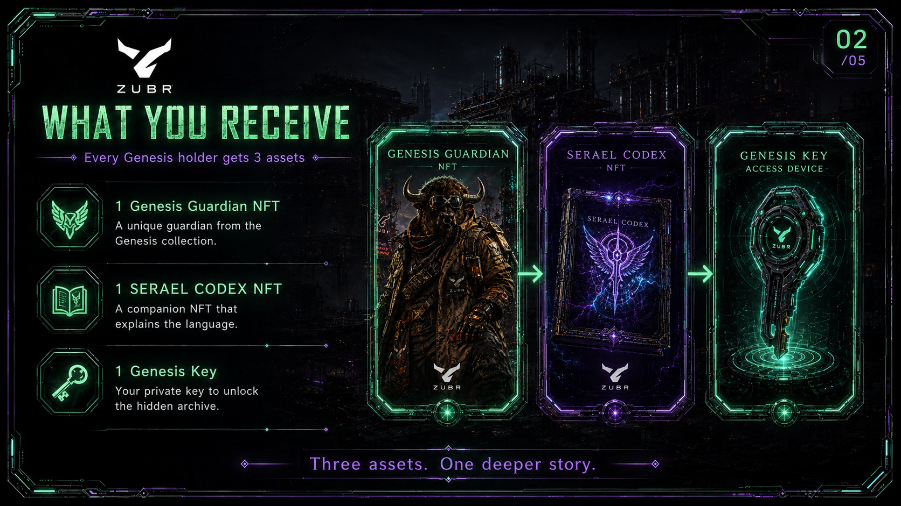
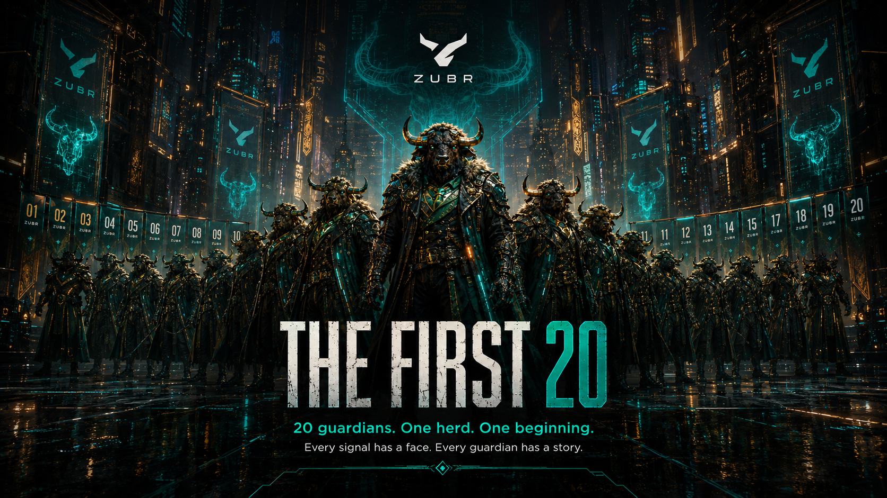
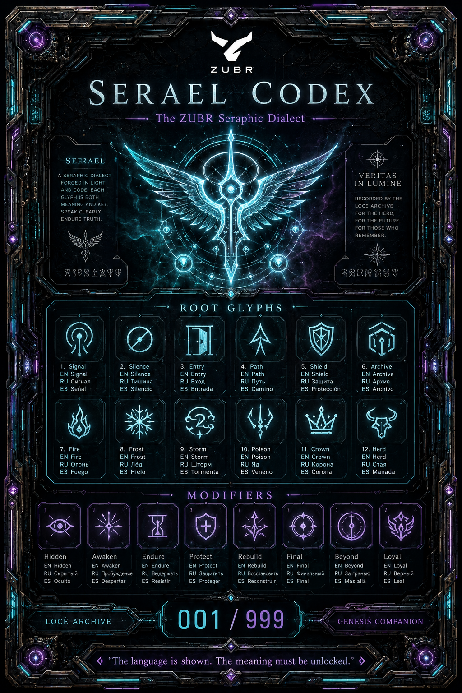
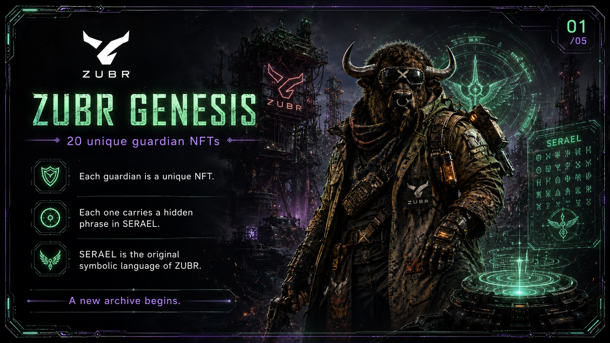
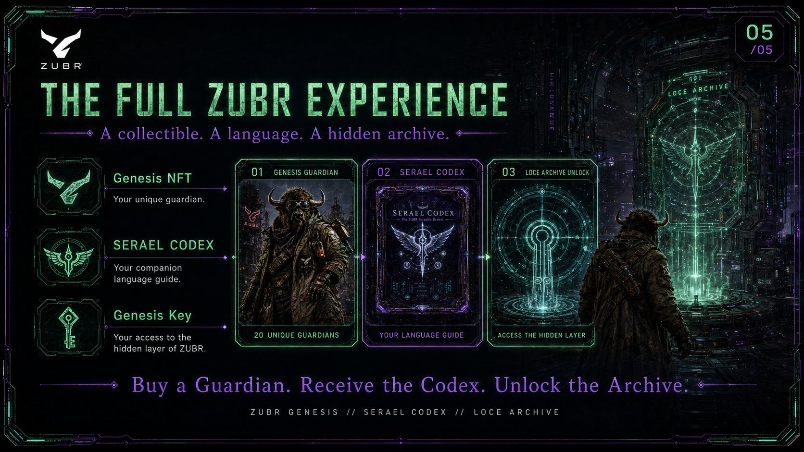
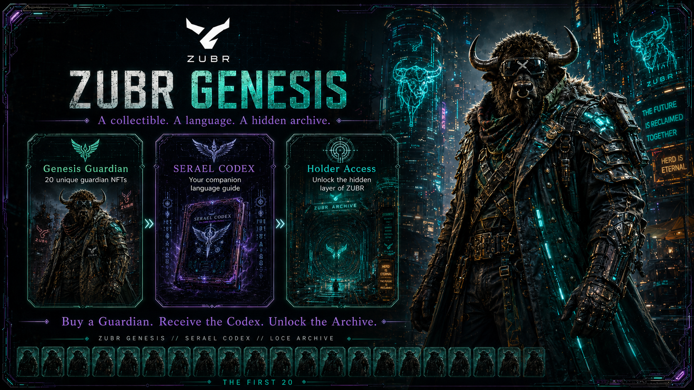
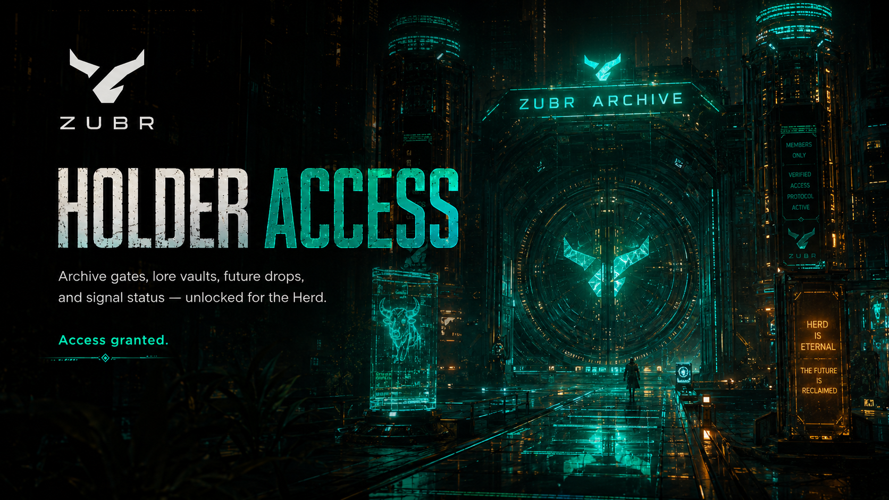

#001
The First Signal
Первый Сигнал
Первый хранитель, который зажёг новый рынок после падения старой системы.
20 первых хранителей, 999 будущих Genesis NFT, 999 подарочных Alphabet NFT и скрытый LOCE Archive — первая NFT-глава экосистемы ZUBR AI.
После Великого Обвала шум стал сильнее анализа, новости начали ломать сценарии, а ложные сигналы заполнили рынок. Первые 20 Хранителей ZUBR ушли за Ледяной Предел и начали строить новый рынок сигналов — систему, где каждый вход имеет причину, каждая сделка получает защиту, а каждый символ хранит память.
Покупатель основной NFT получает персонажа, историю, код доступа и подарочную SERAEL / LOCE Alphabet NFT.

Уникальный хранитель из первой визуальной линии ZUBR Genesis.

Подарочный Alphabet Codex — символический язык ZUBR на русском, английском и испанском.

Код для unlock-блока, который открывает руническое сообщение из LOCE Archive.

Первые 20 персонажей — визуальное ядро всей NFT-вселенной ZUBR.

Первый хранитель, который зажёг новый рынок после падения старой системы.

Следит за границами риска, стопами и дисциплиной входа.

Сканирует шум новостей и отделяет угрозы от настоящих катализаторов.

Кует точку входа там, где хаос превращается в сетап.

Охраняет сделку от лишнего риска и напоминает о защите капитала.

Прокладывает маршрут к целям, частичным фиксациям и выходу.

Выследил ложные сигналы и выжил в Пустыне Шума.

Читает структуру свечей, импульс и следы крупного игрока.

Ищет уровни, где рынок забирает ликвидность перед движением.

Видит пробой до того, как толпа признаёт движение.

Охраняет проход через Ледяной Предел и первые земли-ячеики.

Создал маяки Aurora Cell для нового маршрута сигналов.

Проектирует Land Cells — карту скрытого мира ZUBR.

Хранит дисциплину, молчание и терпение до подтверждения.

Стоит на границе сделки и проверяет каждый сигнал перед входом.

Записывает память старого рынка, ошибки, сделки и обвалы.

Навигатор по циклам, картам импульса и направлению рынка.

Несёт огонь нового сигнала через пустыню и разрушенные рынки.

Подтверждает сигнал без шума: только данные, риск и сценарий.

Финальный хранитель первой двадцатки. Символ нового рынка сигналов.
Пять ключевых зон мира ZUBR: от ледяного маяка до нового рынка сигналов.

Ледяной предел, маяк и первая точка входа в новый мир ZUBR.

Архив сделок, память старого рынка и база ошибок прошлого.

Сетка символов SERAEL, где язык превращается в структуру сигналов.

Зона ложных сигналов, инфошума и сценариев, которые ZUBR должен отфильтровать.

Финальная цель: рынок, где сигнал проходит фильтр данных, новостей и защиты.

Финальная структура: основная Genesis-линия и подарочная Alphabet-линия.

999 Genesis NFT — номерные цифровые хранители на базе первой визуальной вселенной ZUBR.
999 Gift Alphabet NFT — подарочные NFT с SERAEL / LOCE Codex, отличающиеся номером.
NFT не является финансовым инструментом и не обещает прибыль. Это коллекционный артефакт, история и ранний символ участия в проекте.

Демо-код для проверки: ZUBR-001-GENESIS

